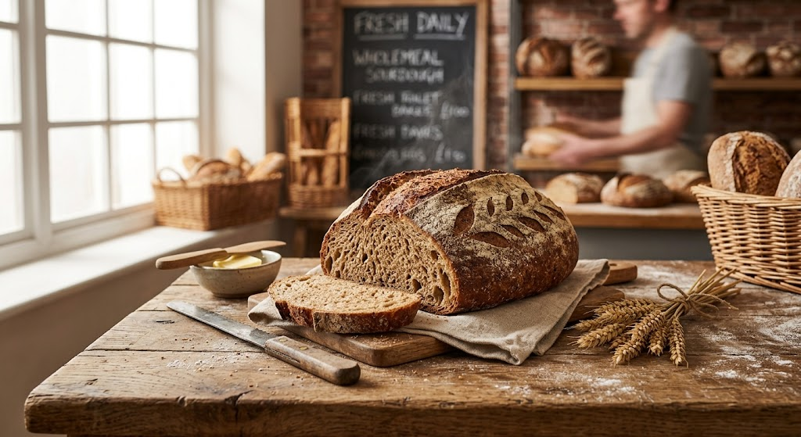
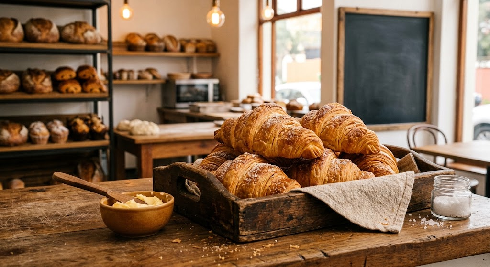
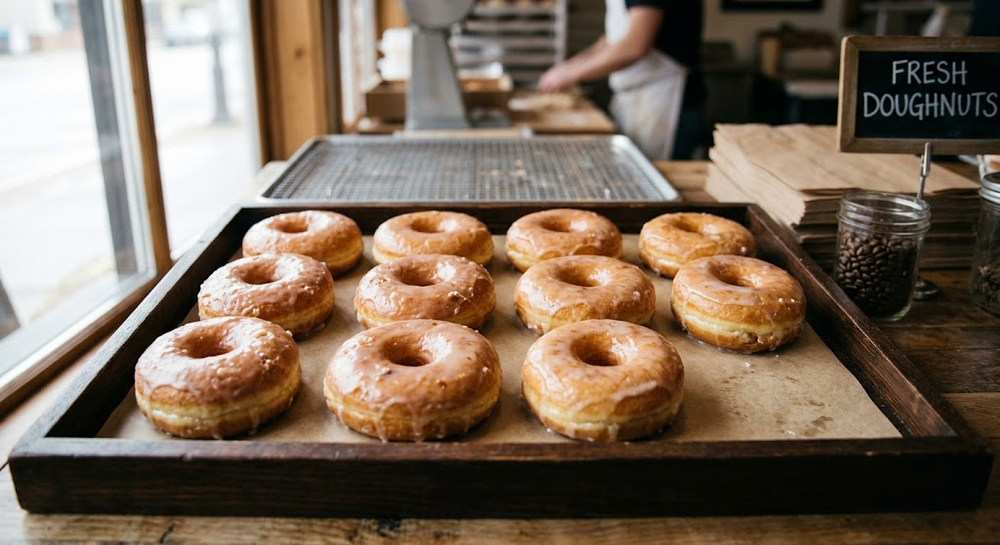
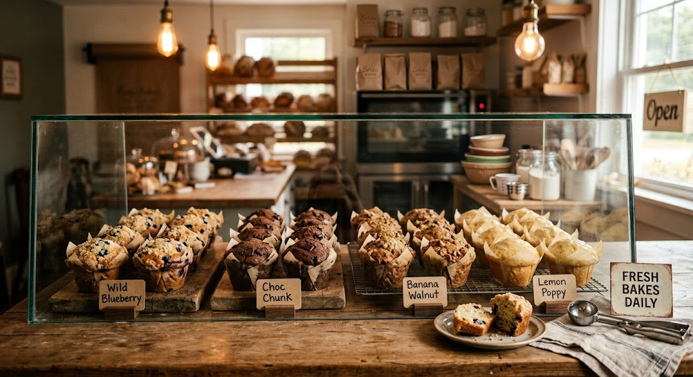
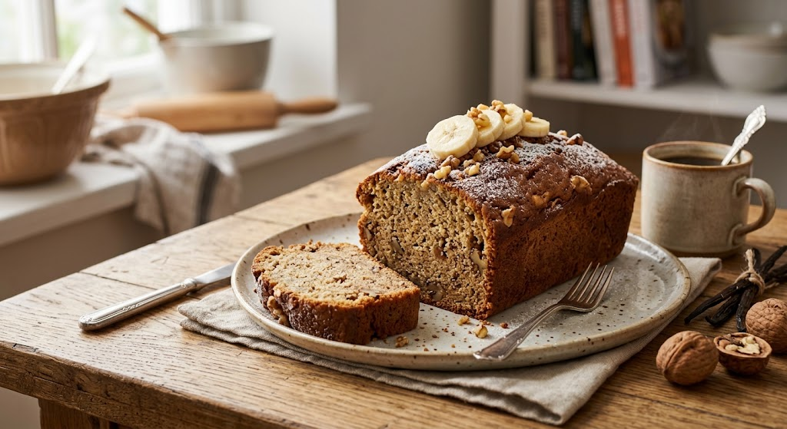
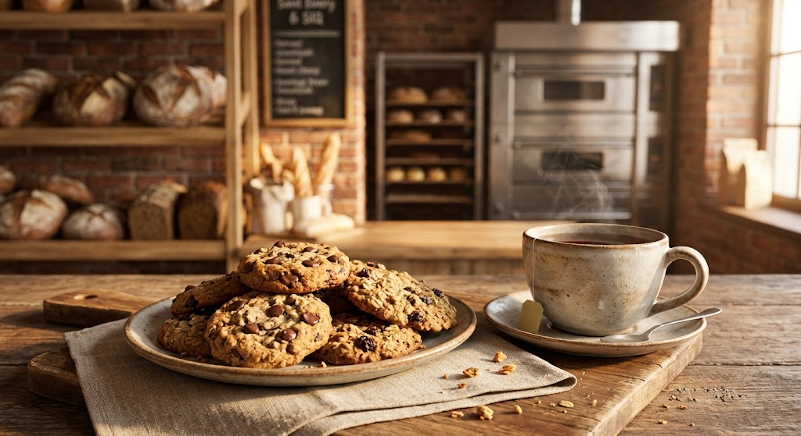

Fresh Every Day
Our baked favourites are prepared with freshness in mind, so there's always something good waiting.
FRESH • SIMPLE • DELICIOUS
Freshly baked favourites, comforting treats and the simple joy of something good from the oven.
See What's Fresh ↓FROM OUR KITCHEN
Whether you're grabbing breakfast, preparing the family table or treating yourself to something sweet, we believe good food should feel simple and comforting.
Our baked favourites are prepared with freshness in mind, so there's always something good waiting.
We keep things uncomplicated and let good ingredients and good baking do the talking.
From the first slice to the last crumb, every bake is made to feel like home.
FRESH FROM THE OVEN
A few of the things you might find waiting at Brown Bread Lovers.

Soft, wholesome and perfect for sandwiches, toast or simply enjoying with butter.
R25
Golden, flaky and buttery — a simple way to make breakfast feel special.
R15
Soft, sweet and finished with a light glaze for the perfect little treat.
R12
Soft, freshly baked muffins made for breakfast, tea time or a quick snack.
R18
SOMETHING A LITTLE SWEETER
Soft, comforting and full of that familiar homemade feeling.
Perfect alongside a cup of tea, shared with family or enjoyed all by yourself.
R30OUR STORY
Brown Bread Lovers began with a simple idea: everyday bread should be something worth looking forward to.
From warm loaves in the morning to something sweet with an afternoon cup of tea, we're inspired by the little food moments that bring people together.
Nothing complicated. Nothing overdone. Just good baking, familiar flavours and a neighbourhood bakery you can feel at home in.

LITTLE MOMENTS
Fresh cookies with tea. Toast with butter. A warm pastry on a quiet morning.
Brown Bread Lovers is about those small moments that make an ordinary day feel a little better.
COME SAY HELLO
Find us in the heart of Glenwood, Durban. Stop by for a loaf, something sweet, or simply follow the smell of freshly baked bread.
18 Willowbrook Avenue
Glenwood, Durban
KwaZulu-Natal, 4001
Monday – Friday: 06:30 – 17:30
Saturday: 07:00 – 15:00
Sunday: 07:00 – 13:00
GOOD FOOD. GOOD COMPANY.
Fresh bread, sweet treats and a warm welcome are waiting at Brown Bread Lovers.
Find Us ↓